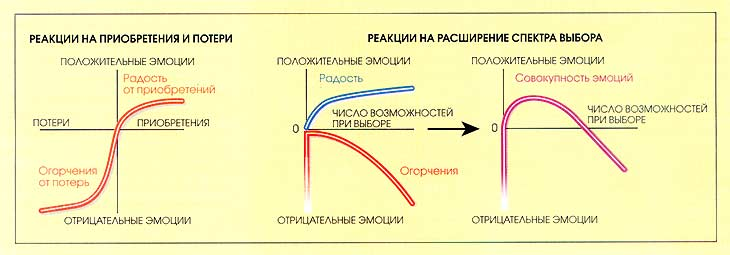

Как правильно выбирать компоненты при разработке
Нерешительность во всяком деле еще более пагубна, нежели дурной выбор
Всем кажется лучшим то, от чего отказались
Правильного варианта не существует
Источники решений
- официальный блог
- блоги разработчиков
- StackOverflow
- кто-то на проекте/в компании
- друг
Откуда ждать помощи?
Давайте расставим приоритеты
Статистика скорости ответов на SO
- Средняя - 3.71 дня
- Медиана - 21 минут
- Максимум - 2 года
Откуда я узнал эти числа?
Откуда я узнал эти числа?

По какой дороге вы бы не пошли, в любом случае вы столкнетесь с непредвиденными проблемами
Анализ
Обязательный анализ компонентов, сравнения, нарисовать табличку
Прокрастинация
Интересы бизнеса
Нельзя все взять и переписать
Синдром хорошего парня - вы не угодите всем членам команды
Цель
Принимая решение важно уметь определять «первичность» цели - это нужно сделать за 3 дня, неделю, в чем основная цель: производительность, гибкость, масштабируемость?
Мотиваторы при выборе
- конструктивные
- не конструктивные
Неконструктивные
- защита себя
- протест
- желание быть лучше других
- желание угодить кому-то
Конструктивные
- защита себя
- протест
- желание быть лучше других
- желание угодить кому-то
Максимализм и конформизм
Исследования Принстонского университета
Максималистам в магазине требуется больше времени для того, чтобы сделать окончательный выбор, чем их оппонентам
Если конформисты находят предмет, отвечающий их запросам, они приобретают его и прекращают дальнейшие поиски.